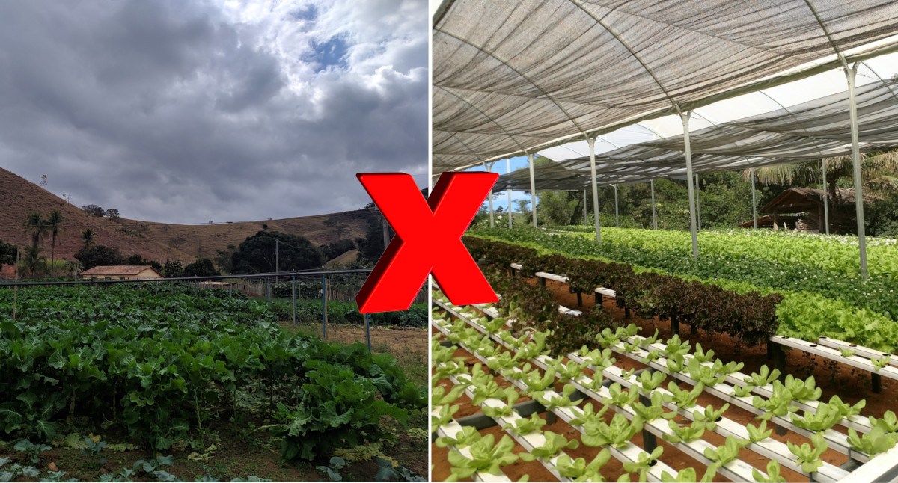

O que é Hidroponia?
A hidroponia, em sua essência, é um método de cultivo que não requer solo. As plantas são cultivadas em uma solução aquosa rica em nutrientes necessários para o crescimento. Isso significa que o sistema radicular das plantas não precisa buscar nutrientes no solo, já que estão diretamente disponíveis na água, facilitando sua absorção e crescimento mais rápido e saudável.
Este sistema de cultivo sem solo apresenta várias vantagens sobre a agricultura tradicional, incluindo a capacidade de produzir alimentos em locais onde o solo é inadequado ou inexistente, economia de água e melhor controle sobre os nutrientes que as plantas recebem. Essas características tornam a hidroponia uma excelente opção para a produção de alimentos em áreas urbanas, onde o espaço é limitado e o solo é muitas vezes inadequado para o cultivo.
História da Hidroponia
A história da hidroponia remonta à antiguidade. As primeiras civilizações a praticar formas de hidroponia foram os sumérios e os babilônios. Os Jardins Suspensos da Babilônia, uma das sete maravilhas do mundo antigo, supostamente utilizavam técnicas de hidroponia.
No entanto, foi somente no século XIX que a hidroponia começou a ser estudada de maneira científica. Os pesquisadores começaram a entender que as plantas absorvem nutrientes essenciais como minerais solúveis na água e que o solo funciona apenas como um suporte mecânico.
Nos séculos XX e XXI, a hidroponia experimentou um crescimento significativo. Tornou-se uma prática comum em países com pouco espaço arável e é vista como uma solução potencial para a crescente demanda por alimentos em áreas urbanas.
Agricultura Convencional Vs Hidroponia
A hidroponia difere da agricultura convencional de várias maneiras, cada uma com suas próprias vantagens e desvantagens. A diferença mais óbvia é que a hidroponia não usa solo. Em vez disso, as plantas são cultivadas em uma solução aquosa rica em nutrientes. Isso tem várias implicações, incluindo a possibilidade de cultivar plantas em áreas onde o solo é inadequado ou inexistente.
A hidroponia também permite um controle muito maior sobre as condições de crescimento das plantas. Isso inclui não apenas os nutrientes que as plantas recebem, mas também fatores como temperatura e umidade. Isso pode resultar em plantas mais saudáveis e produtivas, embora também exija mais monitoramento e manutenção do que a agricultura convencional.